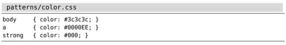

）。
）。技巧73按正则表达式查找时，使用 \v模式开关
与Perl相比，Vim正则表达式的语法风格更接近POSIX。对于已经熟悉Perl正则表达式的程序员来说，这是一个令人失望的消息。但是，通过使用very magic模式 开关，就可以让Vim采用我们更为熟悉的正则表达式语法了。
假设我们要构造一个正则表达式，用于匹配以下CSS片段中的每一组颜色代码：

我们需要匹配1个 # 字符以及紧随其后的3个或6个十六进制字符（包括所有数字以及大写或小写的字母A到F）。
用magic搜索模式查找十六进制颜色代码
下面的正则表达式将满足这些需求：
➾/#\([0-9a-fA-F]\{6}\|[0-9a-fA-F]\{3}\)
要是你愿意的话，可以试着自己做一遍。尽管这个正则表达式能够完成任务，但你看看这些反斜杠，竟有5处之多！
在此例中，我们用到了3类括号。方括号缺省具有特殊含义，因此不用转义。圆括号会按原义匹配字符(及)，因此需要转义，使其具有特殊含义。花括号也一样需要转义，不过，我们只需为开括号转义，而与之对应的闭括号则不用，因为Vim会推测我们的意图。圆括号的情况有所不同，无论开闭括号都必须转义。
这3类括号，每一类都有一套不同的规则。请再读一遍前面这段内容，并谨记于心。俗话说得好，磨刀不误砍柴工嘛！
用very magic搜索模式查找十六进制颜色代码
我们可以利用 \v模式开关来统一所有特殊符号的规则。该元字符将会激活very magic搜索模式，即假定除_、大小写字母以及数字0到9之外的所有字符都具有特殊含义（参见:h \v）。
\v模式开关使得Vim的正则表达式引擎表现得更像是Perl、Python或者Ruby所为。尽管如此，它们之间仍然存在差异，关于这一点，在本章中我们需要时刻留意。但与规定我们哪个必须转义或者不得转义相比，\v模式开关的规则更容易记忆。
这一次，让我们使用\v模式开关，来重写那个匹配十六进制颜色代码的正则表达式：
➾/\v#([0-9a-fA-F]{6}|[0-9a-fA-F]{3})
由于出现在起始位置的\v开关，位于它后面的所有字符都具有特殊含义。这样一来，那些反斜杠字符就可以去掉了，可读性是不是更强了？
用十六进制字符类进一步优化模式
我们可以进一步优化这个模式，在拼写时，用字符类\x代替完整的字符集[0-9a-fA-F]（参见:h/character-classes）。以下模式等同于前面的那个：
➾/\v#(\x{6}|\x{3})
结论
为了方便对比，下表逐项比较了每一个正则表达式：
| 模式 | 说明 |
| #\([0-9a-fA-F]\{6}\|[0-9a-fA-F]\{3}\) | 使用magic搜索模式时，必须转义(、)、| 以及{ 字符，赋予它们特殊的含义 |
| \v#([0-9a-fA-F]{6}|[0-9a-fA-F]{3}) | 使用\v模式开关后，(、)、|以及{字符会表现出特殊含义 |
| \v#(\x{6}|\x{3}) | 使用\x 字符类代替[0-9A-Fa-f]，可以进一步精简表达式 |
最后说明一点：字符#没有特殊含义，因此可按原义匹配。还记得very magic搜索模式是把除_、字母和数字以外的所有字符都当作具有特殊含义的字符吗？看样子我们已经发现了该规则的一个特例。
对于这个问题，Vim的解释是任何还未具有特殊含义的字符都被“保留以备将来扩展时使用”（参见:h /\\）。换句话说，尽管#目前不具有特殊含义，但不意味着将来的版本也会这样。万一将来 # 被赋予了特殊含义，我们必须要将其转义后，才可以匹配“#”字符本身。但各位晚上也别被吓得睡不着觉啊。
历史课堂：Vim模式语法的传承
对于Vim的模式来说，除了由\v与\V开关使能的语法外，还有两种更为古老的语法。Vim缺省使用magic搜索模式，而nomagic模式则用于模拟 vi 的行为，我们可以通过\m与\M开关，来分别使能这两种语法。
\M作为nomagic搜索模式的开关，其功能类似于\V原义开关，不同的是，一些字符会自动具有特殊含义，即符号^与$。
magic搜索模式会自动为某些额外的符号赋予特殊含义，例如：.、*以及方括号。magic模式的设计初衷，是想能更容易地构造简单的正则表达式，但它却没能为诸如 +、？、圆括号以及花括号等符号赋予特殊含义，这些符号还必须经过转义才具有特殊含义。
magic搜索模式旨在让构造正则表达式变得容易，但却半途而废，导致对于哪些字符需要转义的规则制定得比较混乱，难以记忆。\v 模式查找开关正好弥补了这一点，除了 _、数字以及字母外，它为所有符号都赋予了特殊含义。这样一来，既好记又恰好与Perl正则表达式的规则保持一致。